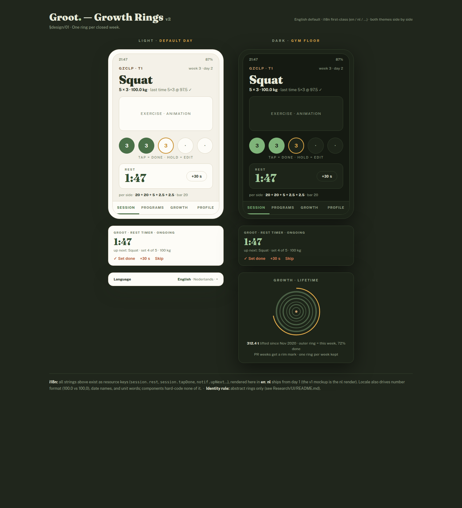
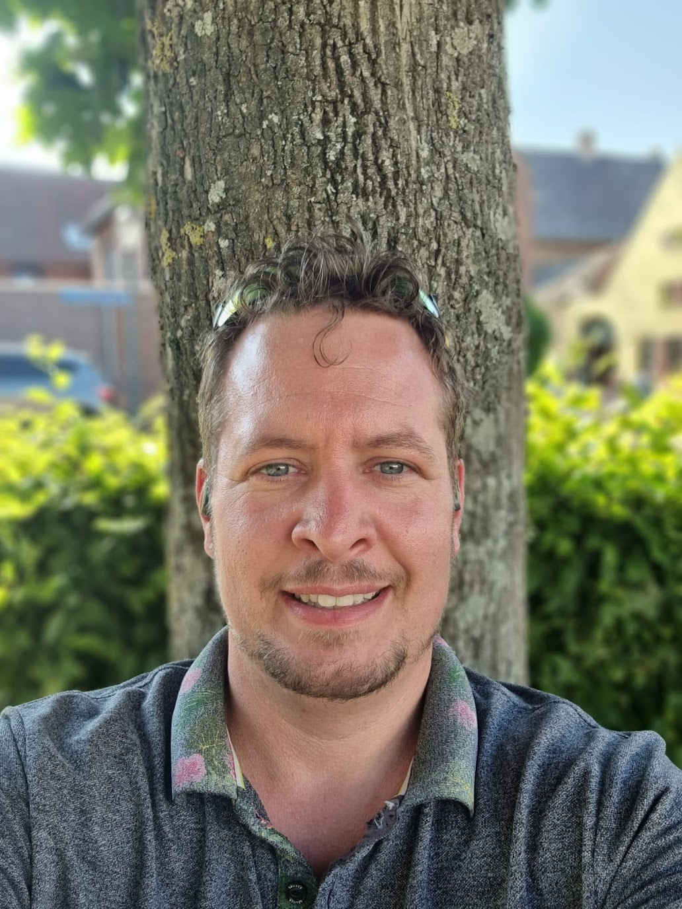
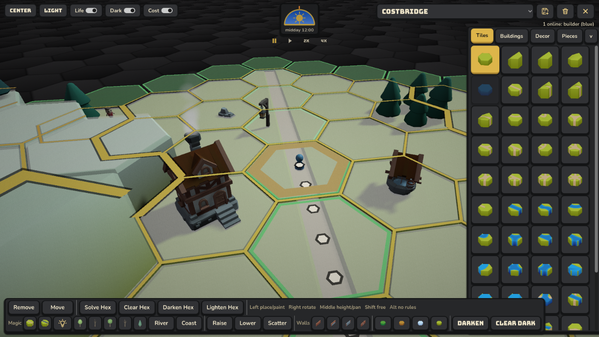
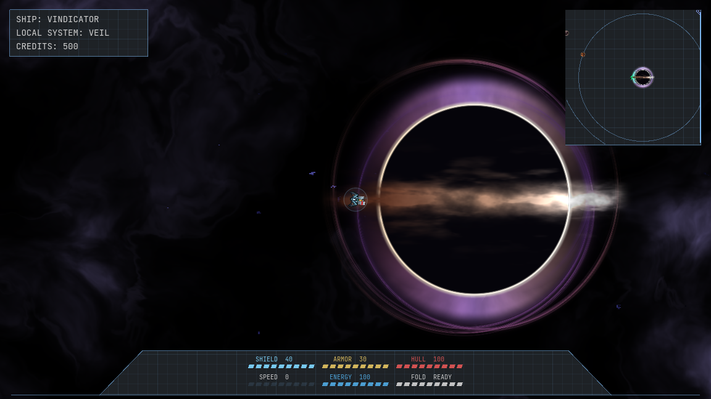

01 / HABITS
Groot
A gentle, data-rich habit system built around rings, cells, and the small satisfaction of showing up.
Independent builder / Urmond, NL
I’m Vincent. I work as a technical consultant and developer, and I keep making things after the client work stops: tools, games, interfaces, and the connective tissue between them.

The workbench / 04 projects
Some are games. Some are tools. Together they show the range I want my work to have: precise enough to trust, strange enough to remember.

A gentle, data-rich habit system built around rings, cells, and the small satisfaction of showing up.

A historical city builder where roads, resources, and the shape of a place matter.
A qBittorrent remote with enough context to make a media-aware setup easier to operate.

A space strategy game about fleets, factions, and making a readable system out of a lot of moving parts.
Elsewhere on this site
For the longer route through my experience, client work, and technical background, start with the CV.
Open the CV